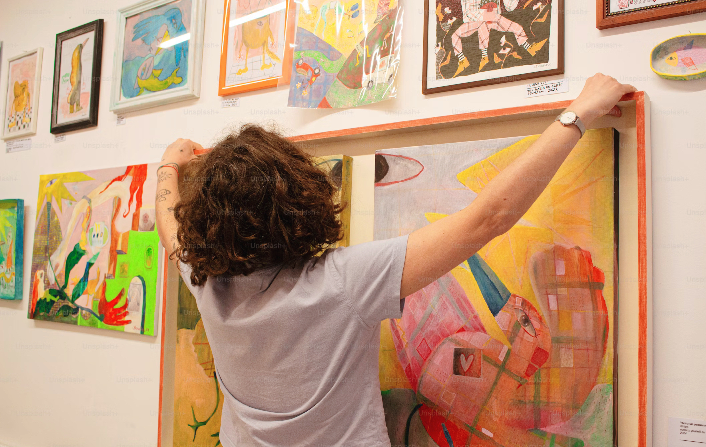
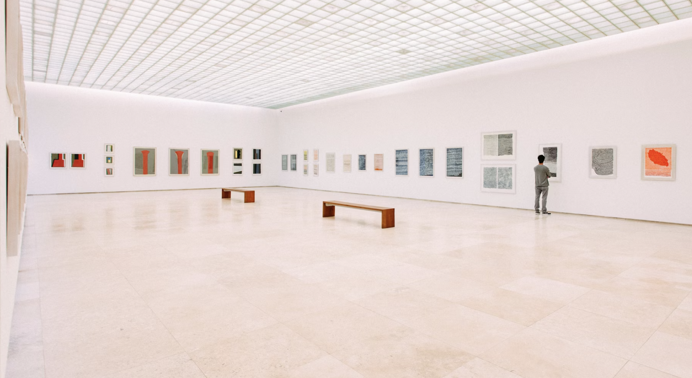

让艺术成为孩子的第二语言
ArtX 由 MetaCher 艺术家与教育家团队在硅谷发起与研发，面向 4–18 岁儿童构建系统化艺术成长路径。以五大国际教育理论为基石，融合展览式教学与跨学科思维，顺应儿童真实的发展节奏——让每一个学期的成长，都能被看见。
联系我们为什么选择 artx
展览式教学，真实体验
每学期结合真实艺术展览，带孩子走进美术馆。观展→解读→创作→策展，在完整闭环中激发真正的艺术感知力。
五大理论，系统进阶
融合 Lowenfeld、DBAE、Reggio Emilia、STEAM、Project Zero 五大国际教育理论，每节课都有科学支撑，不是随便画画。
看得见成长，每学期蜕变
每节课都有创作成果，每学期形成作品集。观察力、审美力、批判性思维——成长肉眼可见。

孩子的作品，走进真实展厅
artx 的学员作品不只停留在教室——我们把孩子们的创作带入 Palace of Fine Arts、Computer History Museum、artx Gallery 等真实展览空间。孩子们以小小艺术家的身份参与布展、面对真实观众、讲述自己的创作故事。当作品被挂上展墙的那一刻，自信与创造力被真正点燃。
了解课程体系 →我们的展览足迹
artx 学员的作品不只停留在画室，而是走进真正的艺术殿堂。
Palace of Fine Arts
旧金山地标性艺术殿堂，artx 学员在这里举办了专属儿童艺术展，作品与世界级场馆同框。
Computer History Museum
科技与艺术的跨界碰撞，孩子们的创作在硅谷最具影响力的博物馆中展出，探索 STEAM 的无限可能。
artx Gallery
artx 自有展览空间，定期举办学员作品展。从布展到开幕，孩子全程参与，体验真正的艺术家工作流程。
artx 成长路径
小小涂鸦班
发现自我表达
- 建立色彩与形状直觉
- 用画笔表达真实感受
- 在自由创作中建立自信
创意探索班
构建想象力结构
- 掌握基础构图与比例
- 探索多种媒材与风格
- 培养观察力与视觉思维
技法进阶班
掌握艺术语言
- 习得光影、透视等专业技法
- 理解不同艺术流派与语言
- 开始形成个人审美偏好
风格养成班
形成个人风格
- 探索独特的视觉表达语言
- 批判性观察与深度表达
- 作品开始有个人识别度
大师预备班
迈向专业路径
- 构建系统作品集与自我叙事
- 对接艺术升学与职业方向
- 艺术成为终身思维工具
一学期的艺术旅程
主题启发
每学期围绕一个核心主题展开，从色彩、构图到材料探索，循序渐进。
观察与讨论
引导孩子观察大师作品和生活细节，用 Project Zero 思维例程培养独立思考。
动手创作
每节课都有完整的创作环节，鼓励孩子用自己的方式表达，而不是照着画。
策展与展示
学期末孩子们策划自己的展览——选作品、写说明、布展、邀请观众，完整体验艺术家的创作闭环。
每节课的样子
整体节奏如此，具体内容因年龄和主题而变化
艺术导入
欣赏作品、观察自然、感知材料，或创意激发——为本节课打开一扇门
观察与提问
See-Think-Wonder——孩子说出自己真正看到和想到的
技法演示
老师示范核心技法，重点讲解，不是全程跟着画
自由创作
孩子独立表达，老师巡回观察、提问、引导——不替孩子画
作品分享
小型展示，孩子互相观看并给出真实回应
读懂每个年龄的孩子
artx 的每个分班节点，都对应儿童认知、人格、大脑与绘画发展的自然转变
以上为科学参考区间，不是硬性规定。每个孩子的发展节奏各有不同——artx 老师会在充分了解每位孩子的兴趣、性格和当前状态后，灵活调整课程内容与深度。
Developmental Framework
Five Dimensions of Artistic Growth
Research-aligned progression · Ages 4–18
Piaget (1952) · Erikson (1959) · Lowenfeld & Brittain (1987) · Educational interpretation for artx curriculum design
五大教育理论支撑每一节课
Lowenfeld 发展阶段论
基于儿童认知发展规律，5个年龄段精准匹配5个绘画发展阶段，不超前、不滞后。
DBAE 学科式艺术教育
每节课覆盖创作、美学、艺术史、艺术批评四个维度，不是简单的"跟着画"。
Reggio Emilia 瑞吉欧
"儿童有一百种语言"——多感官探索、环境即老师、项目制学习，释放孩子的天然创造力。
STEAM 跨学科整合
艺术与科学、数学、工程自然融合——用黄金比例画人体，用光学原理理解印象派。
Project Zero 思维例程
哈佛大学零点计划，See-Think-Wonder 训练深度观察与独立思考，能力远超课堂本身。

家长和机构怎么说
"以前给孩子报的兴趣班都是跟着画，画完就忘了。artx 不一样——每节课都有观察、讨论、思考的环节，孩子现在看到一幅画会主动说'我觉得这个颜色有什么含义'。这种变化让我很惊喜。"
"引入 artx 体系后，我们的课程品质有了质的飞跃。标准化教案让新老师也能快速上手，家长续费率从 60% 提升到了 85%。最重要的是，每节课都有理论支撑，不再是凭感觉教学。"
"女儿从 4 岁开始上 artx 的课，现在 7 岁了。3年下来最让我感动的不是她画得多好，而是她学会了观察世界的方式——去博物馆会自己分析构图，看电影会讨论色彩。这才是真正的艺术教育。"
为孩子选择最好的艺术启蒙
覆盖4-18岁全年龄段，系统化学习路径，看得见成长。
- 展览式教学，激发真实创造力
- 五大国际教育理论支撑每节课
- 每学期作品集，记录成长轨迹
- 小班教学，关注每个孩子的表达
机构合作：即插即用的课程体系
完整教研输出，标准化教案，提升教学品质与品牌竞争力。
- 全套标准化教案，新老师快速上手
- 五大理论背书，提升品牌专业度
- 螺旋课程架构，学员持续续费
- 展览资源共享，打造差异化竞争力
开启孩子的艺术之旅
留下您的邮箱，我们会发送课程详情和试听安排。无论您是家长还是机构，都欢迎联系我们。